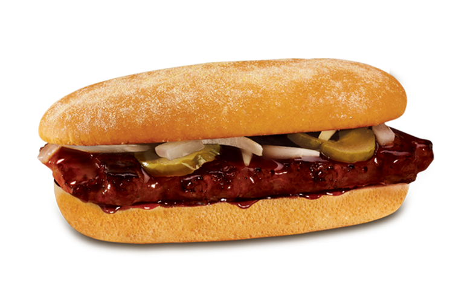

McRib

Description
The McRib is a barbecue-flavored pork sandwich periodically sold by the
international fast food restaurant chain McDonald's. It consists of a
restructured boneless pork patty shaped like a miniature rack of ribs,
barbecue sauce, onions, and pickles, served as a sandwich.
Wikipedia
Ingredients
- ¾ cup ketchup
- 2 tablespoons molasses
- 1 tablespoon Worcestershire
- 1 tablespoon brown sugar
- 1 teaspoon apple cider vinegar
- 2 teaspoons kosher salt
- 1 teaspoon onion powder
- 1 teaspoon garlic powder
- ½ teaspoon ground cumin
- ½ teaspoon chili powder
- ¼ teaspoon ground coriander
- 1 pound boneless pork chops
- 3 tablespoons water
- 1 tablespoon white sugar
- 1 teaspoon kosher salt
- 4 6-inch hoagie rolls
- 4 tablespoons butter, softened
- 8 sliced pickles
- ½ cup sliced white onion
Steps
-
Make the barbecue sauce by combining ketchup, molasses, Worcestershire,
brown sugar, apple cider vinegar, onion powder, garlic powder, cumin,
chili powder, ground coriander, and 1 teaspoon salt in a small saucepan.
Bring the mixture to a boil over high heat before reducing the heat to
medium-low. Simmer the sauce for 15 minutes, until the flavors meld
together. Let the mixture cool before storing it in an airtight
container in the refrigerator. If you don't want to make your own
barbecue sauce, use one cup of store-bought sweet-and-tangy barbecue
sauce.
-
Meanwhile, chop the pork chops into 1-inch cubes. Place the pork cubes
in the food processor with the water, white sugar, and the rest of the
salt. Process the mixture until it's smooth, like ground pork.
-
Divide the ground pork into four 4-ounce portions. Form each portion
into a rectangle that's roughly 6-½ by 3-inches. Using your fingers,
create indentations to make the patties look like "ribs."
-
Place the patties on a piece of parchment paper. Cover the patties with
another piece of parchment. Freeze the patties until they're frozen
solid, about 2 hours.
-
Remove the patties from the freezer. Preheat a griddle or cast-iron
skillet over high heat. When the griddle is hot, add the pork and cook
for 3 to 4 minutes a side, until browned on each side and cooked
through. Let the pork cool for a minute or two.
-
While the pork is cooling, spread ½ tablespoon of the butter onto the
cut side of each bun. Place the buns on the hot griddle, cut-side down,
until they're lightly browned, about 1 minute.
-
Meanwhile, place one cup of the prepared barbecue sauce in a large bowl.
Dip the pork patties into the barbecue sauce, letting any excess drip
off.
-
Place the pork patties onto the prepared buns. Top the pork with a few
pickle slices and 2 tablespoons of the sliced onions.